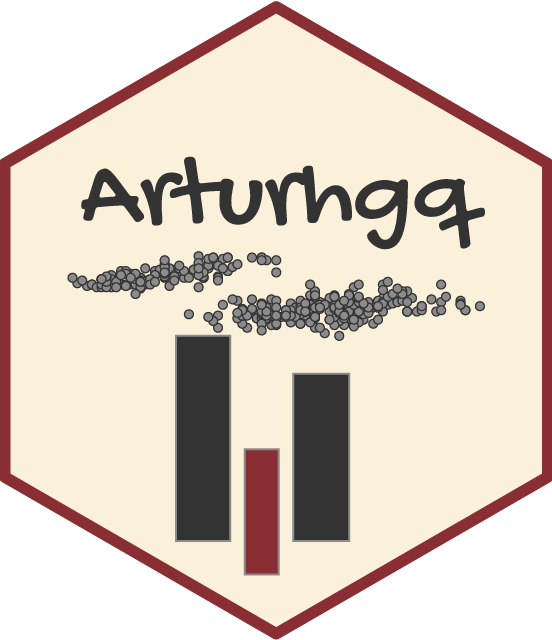

Há algum tempo venho acumulando material que dificilmente será aproveitado em artigos científicos. Tutoriais sobre técnicas de manipulação, análise e visualização de dados, por exemplo. O site foi concebido para dar vazão a esse tipo de conteúdo, mas não se limitará a ele. Também produzirei análises políticas de questões relevantes para o contexto atual. Escreverei, entre outras coisas, sobre:
O site foi construído via blogdown e Hugo. Ele está hospedado na plataforma netlify e é alimentado por um repositório no github1. Blogdown é uma uma biblioteca em R para a construção de websites e Hugo é um gerador de páginas estáticas em HTML.
Todo o conteúdo do site é replicável e está disponível em meu github.↩︎